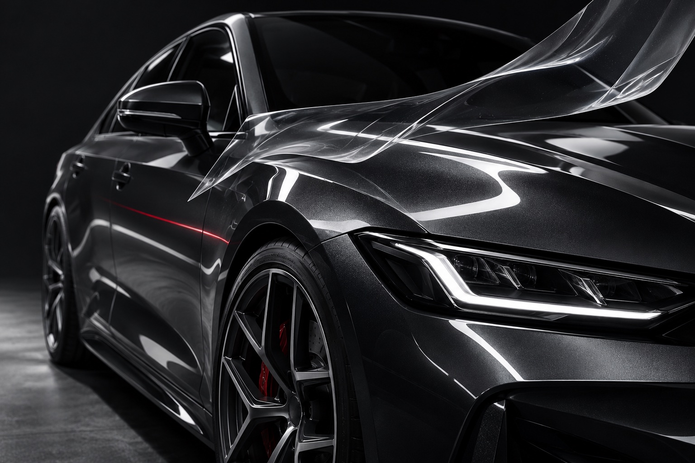

Личный проект / детейлинг
FORMA
Сайт детейлинг-студии: услуги, запись и личный кабинет клиента.
Открыть сайт
Задача
Собрать путь от выбора услуги до записи
Посетитель знакомится с услугами по уходу за автомобилем, выбирает направление и оставляет заявку. В личном кабинете собраны данные автомобилей и обращения клиента.
Решение
Автомобиль в центре внимания
Тёмное оформление, крупная типографика и фотографии обработки кузова задают характер сайта. Услуги объясняются через конкретные работы: коррекция лака, защитная плёнка, тонировка и керамическое покрытие.
Интерфейс
Показать разницу
Сравнение до и после помогает рассмотреть изменение отражений на покрытии. Раздел материалов объясняет, для каких задач используются плёнки и составы.
Сценарий
От услуги к заявке
В форме можно указать имя, контакт, интересующую услугу, автомобиль и детали запроса. Описание этапов работы помогает понять, что происходит после обращения.
Личный кабинет
Автомобили и обращения
Реализованы регистрация и личный кабинет с автомобилями клиента, заявками и историей обслуживания. Доступ к данным связан с аккаунтом пользователя.
Результат
Сайт услуг с продолжением в кабинете
В одном проекте связаны представление услуг, запись и личный кабинет. Это личный проект для портфолио; статистика клиентских обращений не заявляется.
HTML / CSS / JavaScript / база данных
Посмотреть сайт